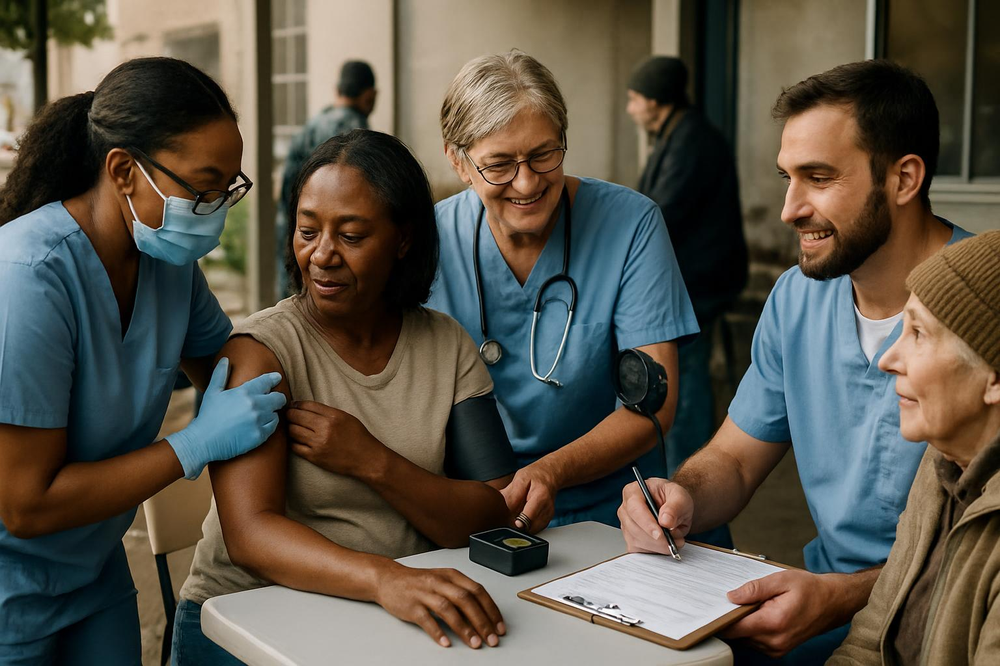

🚀 Nossos Projetos Sociais
Conheça os projetos que estamos desenvolvendo para transformar vidas e comunidades.
Cada iniciativa foi cuidadosamente planejada para gerar impacto duradouro e promover
desenvolvimento sustentável.
📚 Educação para Todos
Nosso programa de educação oferece aulas gratuitas de reforço escolar, cursos profissionalizantes
e acesso a tecnologia para crianças e adolescentes de comunidades carentes. Acreditamos que a educação
é a ferramenta mais poderosa para transformação social.
📊 Impacto: Mais de 500 alunos beneficiados anualmente com acesso a educação de qualidade.
❤️ Saúde e Bem-estar
Realizamos campanhas de saúde preventiva, oferecemos consultas médicas gratuitas e promovemos
atividades de bem-estar físico e mental. Nossa equipe trabalha para garantir que todos tenham
acesso a cuidados básicos de saúde.

📊 Impacto: Mais de 1000 pessoas atendidas em campanhas de saúde preventiva.
💼 Inclusão Econômica
Oferecemos treinamento em empreendedorismo, microcrédito e apoio para geração de renda.
Nosso objetivo é empoderar pessoas para que se tornem economicamente independentes e
contribuam para o desenvolvimento de suas comunidades.
📊 Impacto: Mais de 200 empreendimentos iniciados com apoio de nossa organização.
🤝 Como Você Pode Ajudar
🙋 Voluntariado
Você pode fazer a diferença dedicando seu tempo e habilidades aos nossos projetos.
Procuramos voluntários em diversas áreas: educação, saúde, administração, comunicação e muito mais.
✨ Benefícios de ser voluntário:
- Fazer diferença na vida de pessoas e comunidades
- Desenvolver novas habilidades e experiências
- Conhecer pessoas com valores semelhantes
- Certificado de participação
- Comunidade de voluntários engajados
Interessado em voluntariar? Cadastre-se aqui e entraremos em contato
com você para discutir as oportunidades disponíveis.